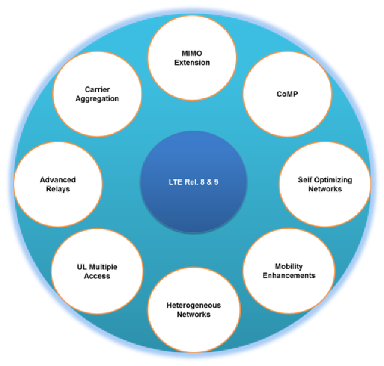

Defense
SAI Technology has a long history of serving Defense customers
for the past 10 years.
SAI provides very unique technology leadership in the 4G/5G
Wireless, SDN, Unified Mobility Cloud and Cyber Security
solutions.
SAI worked with various companies in the Defense and Aerospace
field such as Lockheed Martin, Northrup Grumman, Boeing, Cubic
Systems, Loral Space Systems….etc.
SAI supports advanced Research & Development in 4G/5G wireless and Cyber Security for mission critical Defense and Aerospace applications.
SAI's 4G/5G Wireless core technology enables generation of
various customized waveforms for the Defense and Aerospace
applications, such as Software Defined Radio (SDR), Software
Defined Networks (SDN) and Cyber Security.
Key Challenges in the development of SDR and SDN Waveforms
The paradigm of SDR and SDN poses new challenges or makes current design challenges more stringent. The most relevant challenges are:
- Flexibility: In SDR, SDN and cognitive radio devices there are different design goals. For example, efficient multi-mode or multi-waveform RF transmission must comply with new and old air interfaces to deliver interoperability. Additionally it supports multiple algorithms and reduction of costs via modular and parametric design. In this context, the term waveform represents a complete wireless standard, e.g. GSM, UMTS, WiMAX, 3G, 4G, 5G, WiFi, Satellite Waveforms etc.
- Efficiency: To drive power and space savings through efficient waveforms of SDR and SDN, battery life is extended.
- Design: Between flexibility and efficiency for SDR and SDN, the design challenge is the contradictory nature and presence of several hard real-time waveform constraints like low latency and high throughput. This makes heterogeneous multi-processor system-on-chips (MPSoCs) an inevitable candidate as the hardware platform for the solution.
Heterogeneous MPSoCs with specialized processing elements can pave the way to solve the dilemma of contradicting demands of high computational performance on one hand and energy efficiency on the other. However, designing such a system is highly complex, tedious, error-prone and faced with design space constraint and early verification. What is needed is a description method that can lead to a automatic generation of a waveform implementation directly from the specification. Therefore a methodology is required that raises the abstraction level of waveform design to make it manageable.
SAI Technology's Current Offerings
- LTE Advanced + WiFi Smart Base Stations
- LTE + WiFi M2M Devices
- LTE UE + WiFi AP Virtual CPE
- LTE Advanced Virtual EPC (vEPC)
- LTE Cloud RAN
- Advanced LTE and WiFi Cloud Routers
- Cyber Security Basic and Advanced Solutions
- ANDSF (Access Network Discovery and Selection Function)
- Mobile Cloud Management for Devices
- Interference Management and Range Extension
Special Note: SAI supports Military and Government customers: LTE UE (PHY & Protocol Stack), eNB (PHY & Protocol Stack), and EPC (P-GW, S-GW, MME, HSS and PCRF), C-RAN, Virtual EPC, and Virtual CPE critical components are available for licensing business models. SAI also supports customization of various waveforms for its customers. SAI is flexible to work on various strategic business and engagement models.
4G LTE Advanced Solutions:
The Long Term Evolution (LTE) standard defined by 3GPP is a highly flexible radio interface that aims at bridging the gap between 3G and 4G standards. LTE Release 8 specification was completed in 2009. Since then SAI also had solutions for LTE-Release - 9,10,11,12. And triggered LTE service deployment by leading mobile network operators. It has set various target requirements to achieve higher system performance than HSPA in 3GPP Release 6. It has improved system capacity, cell edge user throughput and lower C/U plane latency, supported by introduction of new radio interface technologies, such as OFDM, frequency domain scheduling and MIMO. In the following year, LTE Release 9 has also been completed to extend various functionalities in LTE Rel.8. The area of enhancement includes closed subscriber group (CSG), self-organizing network (SON), and new functionalities such as location information service and MBMS (Multimedia Broadcast and Multicast Service).

To keep up with the today's rapidly growing traffic, especially by the wide spread of smart phone devices, it became necessary to achieve much higher level of system performance, while keeping the backward compatibility. Accordingly, the radio access interface specifications for LTE-Advanced was developed in 2011. LTE-Advanced (LTE Rel.10 and beyond) sets a major important milestone in standardization where meets and exceeds requirements set by IMT-Advanced for 4G (International Mobile Telecommunications). The new requirements include spectral efficiency, higher bandwidth, and lower latency. To meet these competitive requirements, a series of new technologies have been introduced into LTE-Advanced, such as Carrier Aggregation, Enhanced MIMO, and CoMP (Coordinated multi-point transmission/reception). LTE-Advanced will enable higher than 1Gbps downlink bandwidth in addition to the existing LTE service and open a new era of true wireless broadband services in the near future. LTE-Advanced services will become available from leading mobile network operators around 2014. Additional features include non-contiguous spectra usage to further enhance the current LTE services.

SAI Technology has been heavily engaged in LTE product development from the early stages of LTE standards. SAI has demonstrated complete end to end system solutions for eNodeB and UE for LTE-Release 9, 10, 11, and 12. SAI is developing LTE advancements to fulfill new and future generations of LTE products. SAI delivered LTE Advanced Solutions to the industry 3GPP Releases supported Release 9, 10, 11, and 12.
C-RAN
Mobile Data traffic increasing x2 every year with the increase in demand for the mobile applications.
The density of base stations are very high in urban areas and it is very difficult to add new Base Station (BS) sites for these kind of regions. But still during larger periods of time many BS are under used.
In order to have a high availability and maintainability of BS flexibility is needed in order to provide high data rates at smaller cost. To achieve flexibility as the demand with minimal cost for BS, the BS needs to be Virtualized which makes it as C-RAN. SAI Virtualized BS, developed a solution by architecting traditional RAN to Virtualized BS transitioning to Cloud RAN (C-RAN) to have Dynamic allocation of the processing resources, Inter-connection within virtualized BBU pool, I/O Virtualization.
Virtualizing a physical BS into multiple logical RAN nodes from different mobile network systems, the processing resources should be dynamically allocated to a higher load logical RAN node so that real-time scheduling and strict processing delay and jitter requirements are met. Base Band Unit (BBU) resources in C-RAN BBU pool are also required to scale according to the whole load of BBU pool. These might require northbound interface to virtualization orchestrator in order to manage life-cycle event of virtualized processing resources.
Inter-connection within virtualized BBU pool shall have high bandwidth and low latency switching functions with necessary data formats and protocols to inter-connect among multiple BBUs.
With this switching function, BBU pool can realize the processing load balancing.
With our C-RAN solution it has number of benefits such as
- Lower energy consumption.
- Lower CAPEX and OPEX costs.
- Improved Performance by aggregating the resources effectively.
- Co-existence with Virtualized and Non-Virtualized Networks
- Scalable
- High Availability
eNB Base Station
On the base station side of the network SAI has developed the LTE enhanced node B (eNB) solution to LTE release 9.0, 10.0, and 11.0 specification.
This solution is available in Micro, Pico and Femto formats and supports
- 3GPP Rel-9, 10, and 11 Compliant
- Bandwidths of 1.4, 3, 5, 20 MHz
- Support of UE Categories 1,2 3, and 4
- SISO and 2x2 MIMO
- User downlink data rates of 30 Mbps or more
- User uplink data rates of 10 Mbps or more
- S1 and X2 interfaces
SAI has also demonstrated the world’s first 4x4 MIMO solution for LTE eNB solutions.
The eNB procotol stack includes the PHY layer, the MAC, RLC, PDCP and RRC layers as well as higher layers needed for radio and connection management. In addition, the stack includes the assorted backhaul connection management needs including G-TP, SCTP S1 and X1.
The eNB procotol stack is available as a software product for third party implementations.
SAI Technology's can demonstrate full LTE End-to-End Network Functionality. The diagram below illustrates LTE Handsets connecting to either a Small Cell or Pico Cell with full LTE Capabilities.